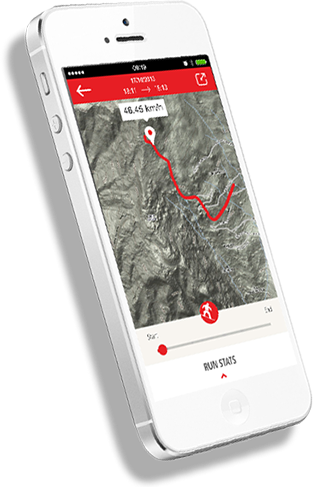
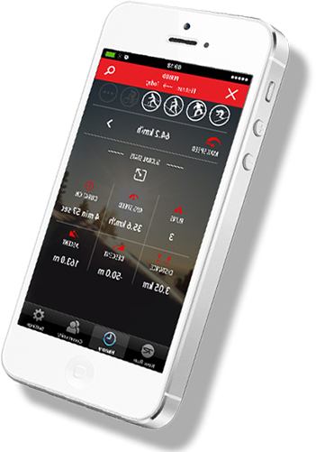

- KASPROWY WIERCH 1987
- DYSTANS 5,03
- CZAS 12,04
-
 MAX PRĘDKOŚĆ
86,98
MAX PRĘDKOŚĆ
86,98
Aplikacja Ski Pursuit pozwala rejestrować wszystkie swoje trasy przez cały sezon
MAX PRĘDKOŚĆ
86,98
Aplikacja Ski Pursuit pozwala rejestrować wszystkie swoje trasy przez cały sezon
Wszytkie twoje statystyki ze wszytkich sezonów w zasięgu twojej ręki